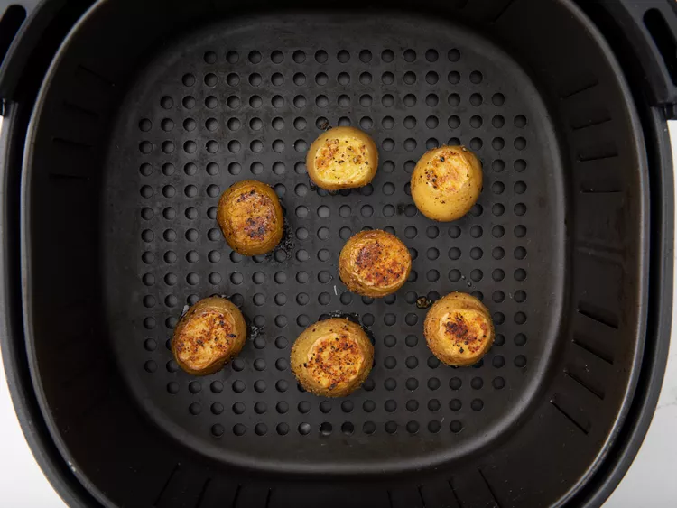

Air Fryer Roasted Potatoes

Air Fryer Roasted Potatoes
Cook time -15 mins-
These air fryer roasted potatoes are golden and crispy on the outside, tender inside, and ready to eat in just 15 minutes!
Ingredients
0.5 pound mini potatoes
2 teaspoons extra-virgin olive oil
salt and ground black pepper to taste
Directions
- Preheat the air fryer to 400 degrees F
- Wash and dry potatoes. Trim edges to make a flat surface on both ends.
- Put extra-virgin olive oil in a large bowl. Add potatoes and toss until potatoes are well coated
- Place in a single layer into the air fryer basket. Cook in batches if necessary.
- Air fry until potatoes are golden brown, 5 to 7 minutes. Flip potatoes and air fry for an additional 2 to 3 minutes. Season with salt and pepper.